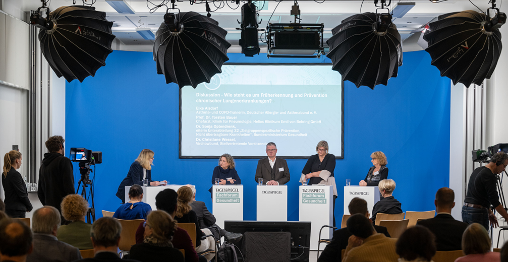
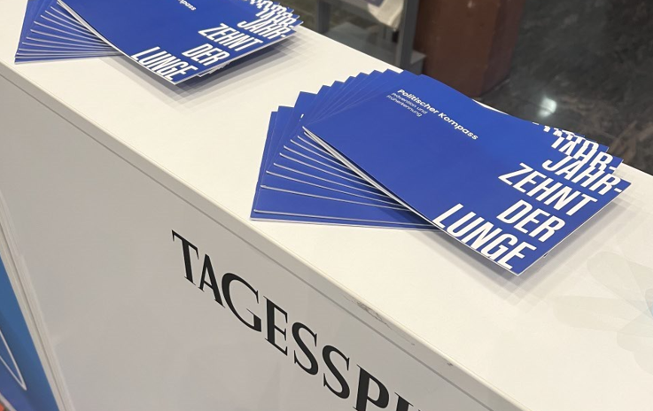

Veranstaltungsrückblick Fachforum Gesundheit – Asthma, COPD und Co.: Wie man die Volkskrankheiten der Lunge bekämpfen kann

Unter dem Titel „Asthma, COPD und Co. – wie man die Volkskrankheiten der Lunge bekämpfen kann" fand am 23. November in Berlin das „Fachforum Gesundheit" des Tagesspiegels statt. Fachleute aus Wissenschaft, Ärzteschaft, Politik, Kassen sowie Betroffene trafen sich, um gemeinsam zu diskutieren, was im Bereich von chronischen Lungen- und Atemwegserkrankungen getan werden muss.
Zum Auftakt der Veranstaltung gab Prof. Dr. Monika Gappa, Chefärztin der Klinik für Kinder- und Jugendmedizin, Evangelisches Krankenhaus Düsseldorf, den Eröffnungsimpuls. Sie mahnte: „Wir brauchen ein langfristiges Konzept, einen „Nationalen Aktionsplan Lunge". Deshalb haben wir das Jahrzehnt der Lunge ausgerufen und fordern ein Umdenken für verbesserte Prävention, Früherkennung und Versorgung."
Die anschließenden Paneldiskussionen zeigten: Chronische Lungenerkrankungen sind unterschätzte Volkskrankheiten und die Herausforderungen sind groß – gleichzeitig ist der Weg zu mehr politischer Anerkennung lang. Elke Alsdorf, Vertreterin von Patient:innen im Deutschen Allergie- und Asthmabund e.V. betonte: „Bevor die Diagnose Asthma gestellt wird, vergehen meist Jahre. Im Bereich der Früherkennung besteht hier Handlungsbedarf: schwere Krankheitsverläufe und das Leiden der Betroffenen müssen verhindert werden."
Prof. Dr. Torsten Bauer, Chefarzt am Helios-Klinikum Berlin, betonte die Relevanz der Tabakprävention und wünscht sich eine gebündelte Stimme der Pneumolog:innen. Auch Dr. Patricia Ex, Abteilungsleiterin des BKK-Dachverbands sieht die Notwendigkeit für Verbesserungen: „Die aktuelle Versorgungsstruktur behindert eine geradlinige und effektive Behandlung von Betroffenen: Das erhöht viele Kostenpunkte."
Die Expert:innen des Jahrzehnts der Lunge werden sich auch in Zukunft weiter auf Veranstaltungen und in anderen Formaten einbringen, um Impulse für eine verbesserte Versorgung von Lungen- und Atemwegserkrankten zu liefern.
Video zur Veranstaltung
Impressionen

DE-55107